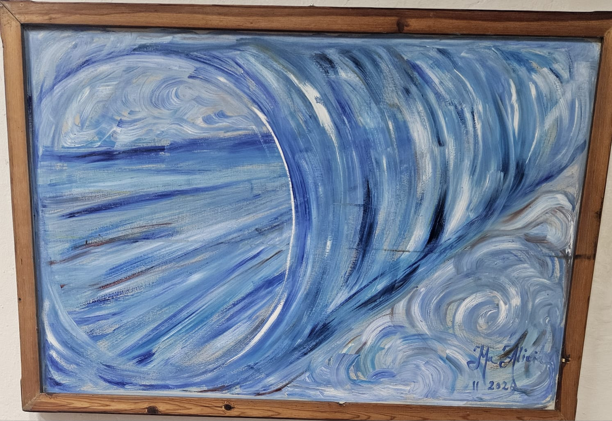
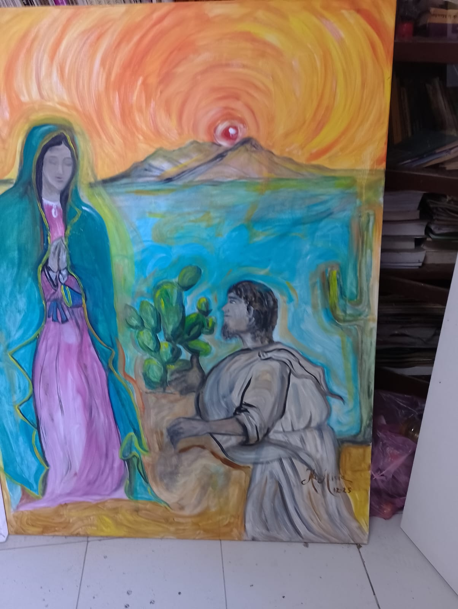
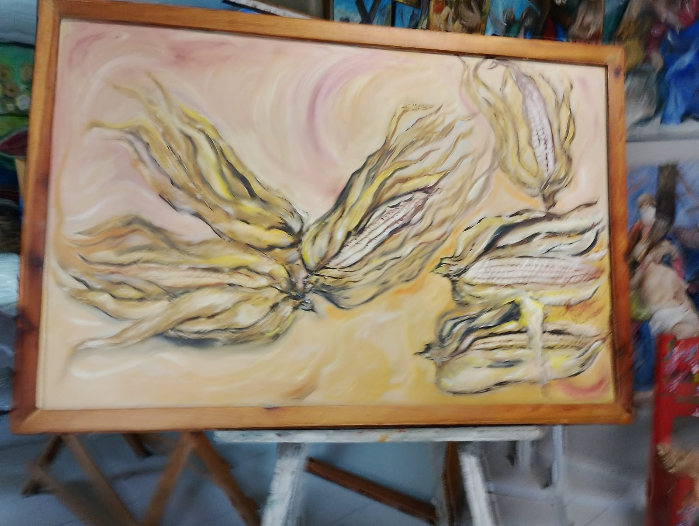
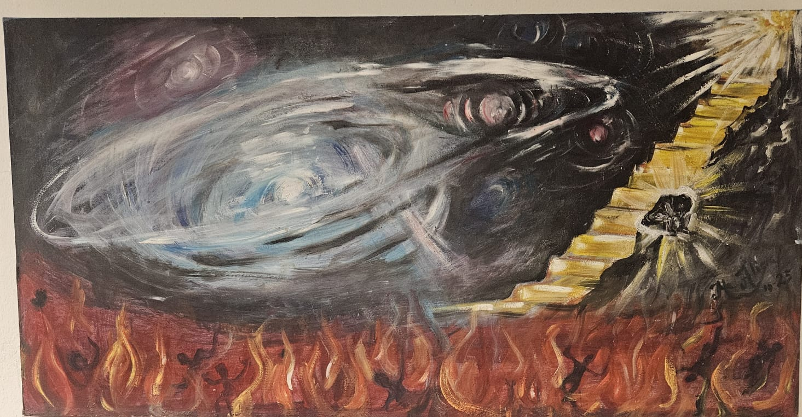
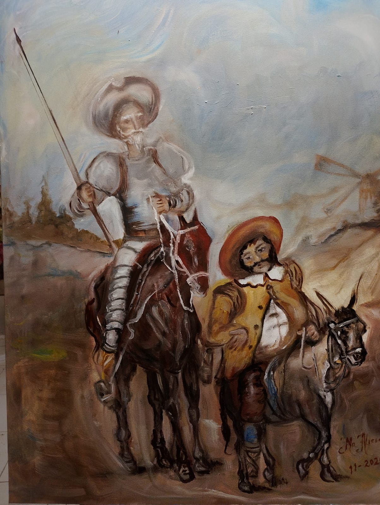

Exhibición permanente
La obra de Ma. Alicia González Garza tiene casa propia en San Buenaventura, Coahuila.
Angélica Villarreal
Galería de arte · abriendo la sala
0%
Entra a la exhibición permanente de la artista Ma. Alicia González Garza: cuatrocientas obras, del Viacrucis a Van Gogh, y una sala que se recorre despacio.



La galería
Aquí la pintura no cuelga: respira. Cada obra nace de cuarenta años de oficio y espera a quien se detenga lo suficiente para escucharla.
La obra de Ma. Alicia González Garza tiene casa propia en San Buenaventura, Coahuila.
Series sacras, bodegones, abstracto, flores del desierto y homenajes al maestro holandés.
Texturas, relieves y pinceladas que solo se entienden frente al lienzo.

Obra destacada
Escalera de luz · Ma. Alicia González Garza
Quiero saber de esta obraLa artista
La galería Angélica Villarreal abre sus salas a la exhibición permanente de Ma. Alicia González Garza: cuatro décadas frente al lienzo y cuatrocientas obras que transitan entre lo sagrado, lo cotidiano y lo imaginado.
Del Viacrucis a las flores del desierto, de los bodegones a la abstracción y a su diálogo con Vincent van Gogh, su pintura no busca decorar una pared: busca quedarse contigo.
Además de la exhibición, Ma. Alicia realiza obra sobre pedido: retratos, paisajes, memoriales y alegorías, en diversas técnicas.
Toca los puntos dorados y mira la obra como la miraría un curador

Don Quijote y Sancho Panza · Ma. Alicia González Garza
Las series
Sigue bajando y la sala se desliza hacia un lado
Estación por estación, el camino del Viacrucis llevado al lienzo con toda la intensidad del pincel.
Quiero conocer esta serieEl desierto también florece: color, espina y luz en una colección que huele a tierra caliente.
Quiero conocer esta serieRepresentación de obras de Vincent van Gogh: la artista conversa con el maestro, pincelada a pincelada.
Quiero conocer esta serieFlores, jarrones y llamas pintadas con empaste generoso: la vida quieta que nunca se queda quieta.
Quiero conocer esta serieMovimiento, azul y gesto libre: obras que no explican, sino que te sumergen.
Quiero conocer esta serieFe y paisaje del norte: escenas sagradas que se viven bajo un sol de espirales.
Quiero conocer esta serieSala principal
Toca cualquier pieza para verla en grande. Si una te detiene, pregúntanos por ella.
La Virgen de Guadalupe
Una secuencia pintada para seguirse en orden: del primer encuentro con la Virgen al milagro de la tilma. Toca cada obra para verla en grande.
Una figura de manto turquesa y un hombre arrodillado junto al nopal, bajo un sol de espirales naranjas.
Juan Diego levanta la mirada, apoyado en su bastón, hacia la Virgen que aparece entre nubes y una luz amarilla.
La Virgen de manto estrellado, rodeada de luz dorada, extiende la mano hacia las rosas que Juan Diego guarda en su tilma.
Juan Diego muestra su tilma, donde aparece la imagen de la Virgen entre rosas, ante un obispo arrodillado.
Obras diversas
Vírgenes, ángeles, un caballo, un gallo y remolinos de color: más obras de Ma. Alicia González Garza. Toca cualquiera para verla en grande.
Recorrido 360°
Arrastra para recorrer la exhibición. Toca una pintura para entrar en ella.
Tu visita
Cuéntanos qué obra o serie te llamó la atención y cuándo te gustaría venir.
Coordinamos contigo el día y la hora para que recorras la exhibición con calma.
Entra a la exhibición permanente en San Buenaventura, Coahuila, y mira cada obra de cerca.
Dónde estamos
Galería de Arte Angélica Villarreal · Exhibición permanente de la artista Ma. Alicia González Garza.
Quiero llegar a la galeríaAntes de venir
En San Buenaventura, Coahuila, México. Usa la sección de contacto para coordinar tu visita y que te orientemos para llegar.
Sí. Es una exhibición permanente de la obra de Ma. Alicia González Garza, quien lleva 40 años pintando y ha creado 400 obras.
Viacrucis, Flor del desierto, Van Gogh (representación de obras del maestro), Bodegones, Abstracto y Sacro.
Escríbenos indicando el nombre de la obra o la serie que te interesó. Te damos la información directamente, sin compromiso.
Para que tu recorrido sea tranquilo, te recomendamos coordinarlo con nosotros antes de venir.
Contacto
Cuéntanos qué obra o serie te llamó la atención. Te respondemos por WhatsApp para coordinar tu visita.
Estamos activando nuestro canal directo.
Muy pronto podrás escribirnos por WhatsApp desde aquí. Mientras tanto, te esperamos en la exhibición permanente, en San Buenaventura, Coahuila.